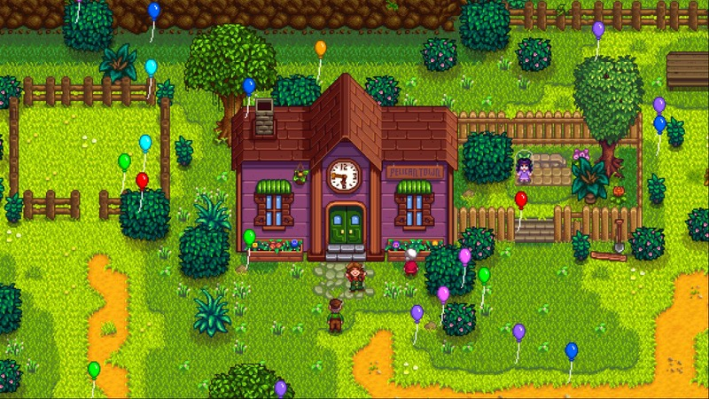

Vítejte ve Stardew Valley
Stardew Valley je odpočinková a klidná videohra o farmaření, ve které je hlavním úkolem postarat se o zděděnou farmu po dědečkovi, která je na začátku v naprosto příšerném stavu. Farma za ty roky stihla zarůst stromy a je na ni potřeba spousta práce, od které tu právě jste. Hra se odehrává ve fiktivním městečku Pelican Town, kde žije spousta vesničanů, se kterými lze navazovat přátelství a u některých i něco více. Tenhle web slouží jako takové malé shrnutí a představení hry a průvodce pro úplně nové hráče.

Proč vám tato hra přiroste k srdci
Ve Stardew Valley na vás nikdo netlačí, každý si najde svoje tempo. Můžete vydělávat peníze různými způsoby, od farmaření přes chov zvířat po těžení či rybaření.
I když jsem říkal, že na vás nikdo netlačí, tak jedna věc tu je: každý den má omezený čas a energii, kterou však lze zvýšit v průběhu hry. Hra střídá všechna čtyři roční období a každé přináší své sezónní plodiny, ryby a různé akce, jako například Vánoce.
Co dál vás může zajímat
-

O hře
Jak hru vytvořil jediný člověk a co všechno se v ní dá dělat.
Zjistit víc o hře -

Vesničané
Dvanáct obyvatel, se kterými můžete uzavřít sňatek, a co jim darovat.
Poznat vesničany -

Farmaření
Které plodiny se vyplatí sázet na jaře, v létě i na podzim.
Přehled plodin -

Tipy
Deset rad, které vám ušetří spoustu času v prvním roce.
Číst tipy